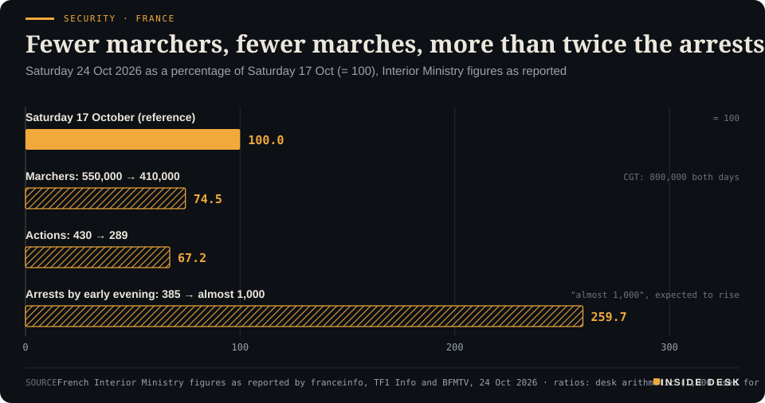
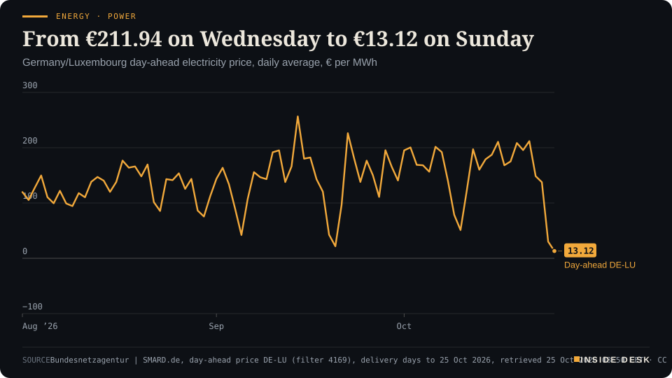
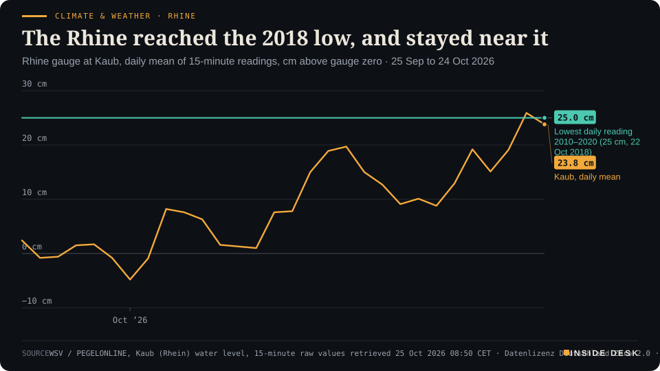

Inside Desk ePaper, Sunday Magazine · Sun 25 Oct 2026
Sunday, 25 October 2026Always free
Inside Desk
The Sunday MagazinePublished 10:00 CET · Berlin
Cover story · Security & Order
France marched again. Fewer people came, fewer marches were held, more than twice as many were arrested and the public buildings stood. The story is in the count, and the count is an institution.
France marched again and the ledger, not the slogans, told you how it went. Oil ended the week at $116.72, the wind sold German power at €13, and the dull machinery of counting, warning and reconnecting kept doing its job.
France counted fewer marchers and far more arrests, oil priced the risk of another round, and the wind sold Sunday's wholesale power at a sixteenth of Wednesday's price.
Geo-economics · p. 5
Markets & Macro · p. 7
Energy & Industry · p. 10
Climate & Weather · p. 16
The week in one sentenceFrance counted fewer marchers and far more arrests, oil priced the risk of another round, and the wind sold Sunday's wholesale power at a sixteenth of Wednesday's price.
ContentsInside Desk · Sunday Magazine25 October 2026
France marched again and the ledger, not the slogans, told you how it went. Oil ended the week at $116.72, the wind sold German power at €13, and the dull machinery of counting, warning and reconnecting kept doing its job.
11 edition pieces · 11 desks · Published 10:00 CET, 25 October 2026
23 ePaper extras, added , 25 October. They appear only in the ePaper and carry their own time.
17:30 Evening ePaper, updated live until 22:30 with an “Updated” time and a Latest page
Sun 10:00 The Sunday Magazine
Berlin time. Every issue is free.
How to read it
Swipe, use the arrow keys or the page strip. Tap any headline for the reading view. Press / to search, t for contents, +/− to zoom. Download the PDF.
The Sunday SequenceInside Desk · Sunday Magazine25 October 2026
Security & Order · The Sunday Sequence · 4 min
France marched again. Fewer people came, fewer marches were held, more than twice as many were arrested and the public buildings stood. The story is in the count, and the count is an institution.
Every large protest produces two numbers before it produces an argument. One comes from the Interior Ministry, the other from the unions, and the distance between them is where the evening’s television lives. On Saturday the two were 410,000 and 800,0001. Last Saturday they were 550,000 and 800,0001. The interesting fact of the week is not either number. It is that both sides kept counting, the same way, a week apart, so that you can compare them.
What the ministry counted. By its own figures, 410,000 people marched across France on 24 October in 289 actions, against 550,000 in 430 actions on 17 October1,2. In Paris the prefecture counted 110,000; the CGT said 250,0001,2. In Marseille, where a march went ahead “à titre dérogatoire”, by exception, the prefecture counted 17,000 and the CGT 100,0002. In Rennes, 11,500 people gathered despite a ban2. In Orléans, where the Rassemblement national was holding its congress, 13,500 people marched against the party and the minister reported no incidents1.
What changed. The number of arrests. By early Saturday evening the minister, Laurent Nuñez, reported “almost 1,000” arrests, and said the figure would rise “significantly” once consolidated1,3. At the same hour on 17 October the count had been 3851,3. Desk arithmetic: fewer marchers, about three quarters of last week’s, and fewer actions, about two thirds, met more than two and a half times as many arrests by the same hour. The chart above sets the three ratios side by side.
The arrests were not, mostly, made in the marches. The minister pointed to checks carried out beforehand at stations, on roads and around city centres, many on prosecutors’ requisitions, which led to seizures of objects that could be used as weapons1. That is the design announced on Friday: 70,000 police and gendarmes, 10,000 more than on 17 October; elite units guarding public buildings rather than policing marches; routes away from shopping districts preferred; prefects free to ban marches where safety could not be guaranteed4.
What it cost. Not nothing. Clashes broke out at the end of the marches in Paris, Lyon, Marseille, Rennes, Bordeaux and Toulouse2. In Paris the prefecture said more than 500 “casseurs” confronted police on the cours de Vincennes, for at least two hours by the minister’s account2. Two people were seriously injured, in Toulouse and Clermont-Ferrand, and 22 were hurt in Lyon, 18 of them police officers5. In Marseille three shops were looted or damaged2. The minister spoke of an “extremely high level of violence”2. Those are real injuries and real shop windows, and they deserve inquiries, not adjectives.
But compare the week before. On 17 October the evening was looting and the morning was a list of damaged towns. On Saturday the minister’s summary was a sentence a ministry rarely gets to say: “Les cortèges se sont bien passés”, the marches went well, and the public buildings stood2,3. The CGT’s leader, Sophie Binet, called it “a massive and peaceful mobilisation despite provocations”2. The minister and the union disagreed, as usual, on the number. They agreed, unusually, on the character of the march itself.
The Sunday SequenceInside Desk · Sunday Magazine25 October 2026
Security · FranceFewer marchers, fewer marches, more than twice the arrestsSaturday 24 Oct 2026 as a percentage of Saturday 17 Oct (= 100), Interior Ministry figures as reported

Bar chart comparing France's second Saturday of cost-of-living protests, 24 October 2026, with the first, 17 October, set at 100, using Interior Ministry figures as reported by franceinfo, TF1 Info and BFMTV. Marchers fell from 550,000 to 410,000, or 74.5. Actions fell from 430 to 289, or 67.2. Arrests by early evening rose from 385 to almost 1,000, or about 260, a figure the minister said would rise. The CGT union counted 800,000 marchers on both days.
Source: French Interior Ministry figures as reported by franceinfo, TF1 Info and BFMTV, 24 Oct 2026 · ratios: desk arithmetic (1,000 used for "almost 1,000") · CSV
The Friday in between. The week was not calm. On Friday morning a gunman opened fire from a car in Trappes and La Verrière, west of Paris, killing one person and wounding others, among them a 12-year-old girl6. A 39-year-old suspect was arrested the same day, and the national anti-terrorism prosecutor opened an investigation6. This desk still waits for the prosecutor on motive. What matters here is sequence: an attack in the morning, an arrest the same day, and the next day’s marches held. A state under strain that keeps doing its paperwork in the right order is a state that works.
The contrarian half. The loudest reading of the week was that France is coming apart. The counts say something duller and more hopeful. Whichever count you prefer, hundreds of thousands of people walked through their cities to complain about prices and public services, and the overwhelming majority walked home. The violence moved from the middle of the day to the end of it, and the police met it earlier, at stations and on approach roads, under prosecutors’ warrants.
It is not a victory. The measure of the policing will be how many of those arrests hold up before a judge, and whether the two serious injuries are explained. The right to march is only protected if the people who police it are accountable for how they do it.
What this means for you. When the next protest weekend comes, wait for the second number: the same figure, from the same counter, a week later. The change in a series tells you more than the size of a headline.
The constructive reading. A government asked to choose between order and the right to protest chose to publish its plan the day before, count its arrests in public and compare them with last week’s. Unions counted their own marchers and said so. A prosecutor took the attack, so that nobody else had to guess. None of that is heroic. It is the dull machinery that lets a country argue about the price of diesel without burning down the shop that sells it.
Geo-economicsInside Desk · Sunday Magazine25 October 2026
Geo-economics · Podium vs Print · 2 min
An ambassador said a strike could come this weekend, his president said he knew nothing about it, and an Iranian envoy said Tehran was still open to talks. The oil market did not wait to find out who was right.
Podium
“Could there be a strike this weekend? Absolutely.”
Tom Barrack, US ambassador to Türkiye, 23 October 2026
Print$116.72
Brent's settlement on Friday, up 6.24% on the week and its fifth weekly gain in a row.
Dow Jones Market Data, 23 October 2026, settlement
The podium, in three voices. On Friday Tom Barrack, the US ambassador to Türkiye, was asked whether there could be a US strike on Iran this weekend. “Absolutely,” he said, while adding that President Trump remained open to a diplomatic agreement and that efforts involving Pakistan and Qatar were under way1. Asked about it after landing in Florida, the president said: “If that’s the case, I don’t know anything about it”1. On Saturday Iran’s ambassador to Pakistan, Reza Amiri Moghadam, said Tehran remained open to talks under the interim deal Pakistan brokered in June, and that it had told Washington through Pakistan it was prepared to reopen the Strait of Hormuz if the US lifted its naval blockade3.
Then the fourth voice. Iran’s armed-forces chief, Major General Ali Abdollahi, said Iran would “under no circumstances and at no time” allow US military vessels into the Persian Gulf1. The IRGC’s navy claimed that two supertankers carrying more than 4.5 million barrels between them had struck mines on what it called an unauthorised route; the claim could not be independently verified1.
The print. The oil market voted on Friday afternoon, New York time, before Saturday’s statements were made. Brent settled at $116.72, up 6.24% on the week, the largest weekly gain since the week ending 11 September and the fifth weekly rise in a row2. It was the highest settlement since 29 April, and just 1.38% below this year’s settlement high of $118.35 on 31 March2. Al Jazeera put the week’s move down to continued attacks on ships in and around the strait together with “the increased odds of renewed war”4.
The gap. The podiums disagree with each other. An ambassador says yes, his president says he does not know, an envoy says talks, a general says never. You cannot average those into a forecast, and this desk will not try. What you can do is notice that the print does not need to know which of them is right. It prices the probability that any of them is, and it does so in dollars.
What the print does not tell you. A futures price is a bet on the next few weeks, not a measure of how much oil actually moves. The physical picture comes from ship counts and port data, and those are patchy in a war: some tankers cross with their transponders off. The $116.72 says the market is paying for risk. It does not say how much oil is missing.
Verdict. The podium offered four positions in two days. The print offered one number, settled and published, with a weekly change you can check. …
Geo-economics · Short item · ePaper extra, added
The world's largest oil exporter wants storage outside its own borders. That is the most honest risk assessment of the week.
Saudi Arabia and Aramco are looking for partners to expand oil storage outside the kingdom, chief executive Amin Nasser told Al Arabiya Business on Thursday, because the Iran war has exposed weak points in the kingdom’s energy network1. Aramco is also studying more export routes: Hormuz, Bab al-Mandab and Suez have all proved vulnerable1.
The numbers behind the decision are large. Citing the IEA, the report says Saudi output fell below 7 million barrels a day for much of the war’s first six months, from more than 10 million before it, and recovered to about 8 million in September1. The East-West pipeline to the Red Sea, with capacity of about 7 million barrels a day, has been the bypass; drones launched from Iraq struck it in September1.
Geo-economicsInside Desk · Sunday Magazine25 October 2026
Geo-economics · Brief · ePaper extra, added
India’s commerce minister, Piyush Goyal, said on Thursday that the trade agreement with the European Union should be signed before the end of 2026 and be operational by March 20271. The deal, announced in January after more than two decades of talks, covers partners that together make up about a quarter of global GDP1. Mr Goyal called it the EU’s “fastest trade deal”1. Twenty years to agree, fourteen months to switch on. The slow part of trade policy is the part that lasts.
Markets & MacroInside Desk · Sunday Magazine25 October 2026
Markets & Macro · 2 min
Chips fell first, bonds caught them second, oil rose third and the rest of the market paid fourth. The S&P 500 lost half a per cent on the week. The sequence is the lesson; the half per cent is not.
On Sundays this desk puts the week back in order. Not by size of headline, but in the order in which prices moved, because the order tells you which worry was driving and which was being dragged along.
1. The chips went first. On Thursday the Philadelphia semiconductor index fell almost 7% and the Nasdaq 2.6%, its worst day since June1. The worry was not demand. It was the cost of borrowing to meet it: data centres are increasingly paid for with debt, and debt has a price1.
2. The bonds caught them. The same day investors ran to US government bonds, giving Treasuries their biggest rally in more than three years1. Almost a full quarter-point of Fed rate rises for next year was priced out during the week1. When one half of a balanced portfolio falls and the other rises, that is not luck. That is the design.
3. Oil rose third, and hardest. On Friday Brent settled at $116.72 a barrel, up $3.55 on the day and 6.24% on the week, its highest settlement since 29 April2,3. Dow Jones Market Data counts five weekly gains in a row and a rise of 12.74% so far this month3. WTI settled at $103.272. Reuters tied Friday’s move to Houthi attacks in Saudi Arabia and an oil spill off the UAE2.
4. Everyone else paid fourth. On Friday the Dow fell 652.82 points, or 1.23%, to 52,215.16; the S&P 500 lost 0.52% to 7,623.68; the Nasdaq slipped 0.21%4. Technology steadied, rising 0.35%, while consumer staples, consumer discretionary and financials each fell more than 1%4. American Express fell more than 3% after announcing it would cut about 5% of its global workforce, citing the need to “prepare for AI”5. On the week, the S&P 500 lost 0.5% and the Nasdaq 0.7%, while the Dow gained 0.4%, its third weekly gain in a row4.
What the order says. The week began as a technology story and ended as an oil story. By Friday the selling had moved from the companies that build the future to the companies that sell groceries and lend money today, which is what a higher fuel bill does: it taxes everything a little. “There is still fallout from the questioning of the AI trade,” Kristina Hooper of Man Group told Reuters4. True, and by Friday it was no longer the main fallout.
What it does not say. It does not say a crash has begun. A half-per-cent weekly loss after a seven-per-cent day in chips is a market absorbing news, not panicking about it. The harder test arrives this week, when about a third of S&P 500 companies report, among them Alphabet, Microsoft and Amazon4. Their capital-spending forecasts are the invoice the whole AI trade is waiting to read.
For you. If you hold a broad fund, this was a week in which it did what it says on the tin. Nothing here is advice.
Markets & Macro · Short item · ePaper extra, added
The VIX crossed a round number. Round numbers are for headlines; the move is for reading.
The Cboe Volatility Index, the VIX, rose 14% on Thursday to 19.03 and another 6% on Friday morning to 20.24, CNBC reported1. The index measures how much movement traders expect in the S&P 500 over the next 30 days, as priced into options1. The week before, it had already risen 34.7% to 19.99, its largest weekly gain since early June1.
Twenty is not a threshold where anything breaks. …
Markets & Macro · Brief · ePaper extra, added
China’s CSI 300 rose 1.71% on Friday and still closed lower for the week, its eleventh weekly fall in a row, CNBC reported1. Japan’s Nikkei lost 0.34% that day and Korea’s Kospi gained 0.3%1. Eleven weeks is a long time for a market to drift lower without a crash. Slow declines get fewer headlines than sharp ones, and they are often more informative: they reflect a steady reassessment, not a fright. Nothing here is advice.
Politics & InstitutionsInside Desk · Sunday Magazine25 October 2026
Politics & Institutions · 2 min
The Rassemblement national re-elected its president in Orléans with no opponent. In Berlin the Länder asked for a tax cut with no funding line. Both are votes; only one of them was counted.
Orléans. Jordan Bardella, the only candidate, was re-elected president of the Rassemblement national at the party’s congress in Orléans on Saturday with 98.98% of the votes cast1,2. That was 75,497 votes, against 779 blank ballots, on a turnout of about 68%1,2. Members had voted electronically from 21 September to 22 October1,2. Outside, 13,500 people marched against the party, and the Interior Ministry reported no incidents3.
What the number measures. Not popularity in the country. A single-candidate vote tells you two things: how many members bothered to vote, and how few chose to spoil their ballot. About a third did not vote at all1. Desk arithmetic: of members entitled to vote, roughly two in three said yes. That is a strong showing for discipline and a weak one for drama, which may be exactly what the party wanted.
Berlin, the same week. On Thursday the sixteen state premiers asked the federal government to cut the electricity tax for everyone “as quickly as possible”4. On Friday the deputy government spokesman said the goal stands, “under a financing proviso”, and named no date4. Finance Minister Lars Klingbeil had said that anyone proposing a cut should bring proposals for how to pay for it4.
The common thread. Both stories are about the difference between a mandate and a ledger. A party can give its leader 98.98% in a month of voting. A coalition can agree a goal in a single sentence. Neither has yet said where the money for its promises comes from, and that is the question voters in both countries face at the till this autumn.
The constructive reading. Both systems are doing the dull part properly. A party published its vote count, blank ballots included. A federal spokesman said out loud that a tax cut needs funding. Neither is exciting. Both are the kind of sentence you can hold someone to later.
Politics & Institutions · Short item · ePaper extra, added
The Länder want it, Berlin wants it 'under a financing proviso'. Here is what it would mean on a household bill, and what it would cost the budget.
The electricity tax for households is 2.05 cents per kilowatt hour; the EU minimum is 0.1 cent1. Cutting it to the minimum for all consumers would cost about €5.4 billion a year, by the finance ministry’s estimate1. So far the cut applies only to manufacturing and to agriculture and forestry1.
At home, including VAT, a full cut would save about 2.32 cents per kilowatt hour if suppliers pass it on1. That is roughly €58 a year for a two-person household using 2,500 kWh, €81 for three people at 3,500 kWh and €104 for a family of four at 4,500 kWh1.
On Friday the deputy government spokesman said the goal of implementing the cut stands, but “under a financing proviso”, and gave no date2. Desk arithmetic: for a family of four, each year without the cut is about €2 a week. Not nothing, and not a reason to wait for it before you plan your winter. The cut becomes real on the day someone publishes where the €5.4 billion comes from.
Chancellor Friedrich Merz leaves Berlin on Monday for Singapore, Japan and South Korea, returning on Friday with a business delegation, the deputy government spokesman said1. Tokyo hosts a German-Japanese economic summit; in Seoul he opens the 19th Asia-Pacific Conference of German Business1. The stated common ground is “open, rules-based trade” and resilient supply chains, with AI named as one field for closer work1. After a week of chip sell-offs and fuel prices, five days spent on supply chains are five days spent on the right subject.
Psychology & BehaviourInside Desk · Sunday Magazine25 October 2026
Psychology & Behaviour · 2 min
British confidence fell by the most since the first lockdown. British shoppers bought a little less. A market strategist called the AI trade a bubble and then said that was fine. This week was a lesson in reading feelings next to behaviour.
The feeling. GfK’s consumer confidence index for Britain fell eleven points to −24 in October, the biggest monthly drop since April 20201. Outside the pandemic, the last fall on that scale followed the 2016 Brexit vote1. “The speed of this deterioration is alarming,” said Neil Bellamy of GfK1. The survey asked 2,003 adults between 1 and 14 October1.
The behaviour. The Office for National Statistics reported that retail sales volumes fell 0.4% in September, after a 0.7% rise in August; over the third quarter they still rose 0.7%2. Fuel volumes rose on the month “despite fuel prices continuing to rise”2. People said they felt much worse; they spent a little less.
Why that is normal. Surveys capture expectations, and expectations move as fast as the evening news. Spending is made of routines: the weekly shop, the commute, the tank that has to be filled whatever the price. Routines change slowly and partly. That is why a confidence survey is a warning light, not a verdict, and why the honest answer to “are people cutting back?” is usually “a little, and later”.
The kind word. On Thursday, after chip stocks fell almost 7%, the strategist Ed Yardeni called the AI trade a “bubble”, and then added: “Taking some air out of the AI bubble is a good thing. I don’t think it’s going to burst and create problems for the economy”3. Words travel in families. “Bubble” usually comes with “burst” and “panic”. Here it came with “maintenance”. You do not have to agree with him to notice which framing is easier to think with.
For you. When the news says everyone feels poorer, look at your own bank statement before you change your plans. It is the one series you can read every day, and it is usually calmer than the headline. Nothing here is advice.
Psychology & Behaviour · Short item · ePaper extra, added
A preregistered brain-imaging study found hormones nudge emotional control a little, and not in the way stereotypes say.
A preregistered study from the University of Barcelona, published in Psychological Medicine, scanned 116 naturally cycling women aged 18 to 35 while they did an approach-avoid task1. Higher salivary progesterone went with less distinct activity patterns in two brain regions linked to emotional control, with correlations of about −0.251. Neither hormone was linked to speed or accuracy on the task, and estradiol showed no link at all1. An indirect path to worse recent mood explained 7.1% of its variation1.
“Progesterone is certainly not a master switch,” said the lead author, Macià Buades-Rotger1.
The study is worth your Sunday for its method rather than its headline. Preregistration means the researchers said in advance what they would test, which makes it harder to find patterns after the fact. The effect is real and small, and behaviour on the task did not change. That is how most honest findings in psychology look. Be wary of anyone who turns a correlation of −0.25 into a rule about half the population.
Kering shares fell 12% in early trading on Friday after Gucci, its main brand, reported a 6% fall in same-store sales1. Bernstein’s Luca Solca pointed to living costs, and to something harder to fix: “an underlying lack of interest in Gucci’s core product”1. L’Oréal, which sells smaller luxuries, beat forecasts the same morning1. Behavioural economists have a dull name for this: substitution. A lipstick is still a treat. It is just a cheaper one.
Energy & IndustryInside Desk · Sunday Magazine25 October 2026
Energy & Industry · 2 min
Berlin did two things about fuel this week. One was a dialogue with a strategy to follow. The other was a regulation that lends the market eight days of the national oil reserve. Read both, line by line.
Document one: the refinery release. On Friday the economy ministry opened a dialogue with the mineral-oil industry on the future of Germany’s refineries, to be turned into a strategy paper for the cabinet1. Line by line:
The inventory. Eleven refinery sites, a processing capacity of a little over 92 million tonnes of crude a year1. This is the most useful sentence in the release, because it is a count.
The claim. The loss of these sites “cannot be compensated by imports” and would threaten the chemical companies that depend on them1. A strong sentence. It is an argument, not yet a finding.
The bill. The plants must convert step by step to sustainable feedstocks, which needs “investments in the billions”1. The release does not say whose billions.
The method. A cross-ministry study on what a resilient energy system needs, and how resilience can be anchored in planning and administration1. Count, then study, then decide: the correct order, and a slow one.
Document two: the reserve regulation. The seventh regulation on releasing stocks of Germany’s oil stockholding agency took effect on Thursday2,3. Line by line:
The number. The agency may temporarily reduce its required stock from 90 days of cover to 822,3. Eight days of national cover are being lent to the market.
The share. Under the International Energy Agency’s key, Germany contributes 19.5 million of a 100-million-barrel release; 6 million had been released by October2.
The order. For the remaining 13.5 million barrels, the ministry will start with diesel and heating oil2. Those are the products that fill the tank and the boiler.
The length. Two sections, with the consent of the Bundesrat3. Brevity is a virtue in a regulation.
Reading them together. The first document is about the 2030s; the second is about November. One has a study attached, the other a number of days. On a week when Brent settled at $116.72, its highest since April4, it was the shorter text that put barrels where people buy them.
The constructive reading. Neither document is dramatic. Both begin with a count, sites and tonnes in one, days and barrels in the other. A state that knows what it has before it decides what to do is doing energy policy the dull, right way round. Nothing here is advice.
Energy & Industry · Short item · ePaper extra, added
Europe's October LNG imports are running below last year's, while Japan's utilities sit on 36% more than a year ago. Two strategies for the same winter.
Europe’s imports of liquefied natural gas are estimated at 9.11 million tonnes for October, up from 7.76 million in September but down from 10.59 million in October 2025, according to Kpler data cited in a Reuters column1. EU gas storage was 74.6% full on 21 October, 11 points below a year earlier1.
Asia is buying instead. …
Energy & Industry · Brief · ePaper extra, added
Brent’s December contract settled at $116.72 on Friday, up for a fifth week in a row and for nine of the past eleven1. It was the third-highest settlement of 2026, 1.38% below the year’s high of $118.35 on 31 March and up 91.82% since the start of the year1. It is still 20.10% below the record of $146.08 set in July 20081. Desk arithmetic: a barrel that cost about $61 on New Year’s Eve now costs nearly twice that. Diesel and heating oil follow with a lag.
Money, FX & CommitteesInside Desk · Sunday Magazine25 October 2026
Money, FX & Committees · 2 min
Economists expect the ECB to hold on Thursday. The week's business survey gave them a reason: costs up, selling prices slower. A committee that waits for the second print is not dithering; it is reading.
The poll. In a Reuters survey taken from 5 to 8 October, all but three of 73 economists expected the European Central Bank to hold its deposit rate at 2.50% at its meeting ending on Thursday 29 October; 64 expected a quarter-point rise in December1. Inflation was 3.8% in September, nearly double the 2% target1. Economists expected it to average 3.7% this quarter1.
The argument for waiting. The poll named it: so far there has been “scant evidence” that higher energy prices are spilling into other consumer prices, which would be the trigger for further rises1. “Market rates have increased meaningfully and are doing some of the job for the ECB,” said Anatoli Annenkov of Société Générale1.
The week’s evidence. On Friday the flash composite PMI for the euro area fell to 51.9 in October from 53.1, below every forecast in a Reuters poll2. France fell back into contraction; Germany slowed but kept growing2. Inside the survey was the line committees read first: input costs rose faster for a second month, driven by energy, fuel and transport, while firms raised their own selling prices more slowly than in September2. “There is still little evidence of second-round effects, which will be reassuring for the ECB,” said Harry Chambers of Capital Economics2.
The bond market’s vote. French ten-year yields rose nearly 27 basis points over the week to about 5.05% on Friday, and the spread over German Bunds stayed above 170 basis points, its widest since the euro-zone debt crisis3. Desk arithmetic: 170 basis points is 1.7 percentage points a year on every euro France borrows for ten years. That is tightening, of a kind, delivered without a meeting.
What to expect, without forecasting. This desk does not forecast decisions. It reads what a committee is looking at. On Thursday it will be looking at costs rising, prices following slowly, wages not yet moving and one large member state’s borrowing cost rising on its own. That is a list that argues for patience, and for keeping the next step open.
For you. If you are fixing a mortgage or a savings rate this autumn, the price that matters is the market rate your bank quotes, which already moved. The committee’s decision on Thursday is the second print, not the first. Nothing here is advice.
Money, FX & Committees · Short item · ePaper extra, added
US jobless claims fell to 194,000. For a committee watching wages, a labour market this firm is the number to respect.
Initial claims for US unemployment benefits fell to a seasonally adjusted 194,000 in the week to 17 October, the Labor Department reported on Thursday1. Economists polled by Dow Jones had expected 200,0002. The year’s low, 189,000 in the week of 18 July, was the lowest since the late 1960s, and the four-week average is now 197,7501.
Two readings sit inside the number. The comfortable one: American employers are not laying people off, despite oil above $100 and a sell-off in technology shares. The less comfortable one, for the Federal Reserve, which meets this week: a labour market this firm leaves room for wages to follow energy prices, the second-round effect central banks fear most. …
Money, FX & Committees · Brief · ePaper extra, added
Japan’s core inflation, which excludes fresh food, rose to 2.1% in September from 1.7% in August, its highest this year and in line with a Reuters poll, CNBC reported1. The “core-core” measure, which also excludes energy and is the Bank of Japan’s preferred gauge, was 2.4%1. Rice prices fell 20.6% on the year1. For a country that spent decades trying to get prices to rise at all, a gauge sitting just above target is the quiet success of the week.
Ordinary & Inherited LifeInside Desk · Sunday Magazine25 October 2026
Ordinary & Inherited Life · 2 min
Germany's wholesale electricity price fell from €211.94 on Wednesday to €13.12 for Sunday as the wind picked up. Diesel at the pump barely moved. Two invoices, one weekend, and only one of them reaches you this month.
The Ordinary Ledger reads the week’s prices in the order a household meets them. This week two of them went in opposite directions, and only one moved fast.
Power, wholesale. Germany’s day-ahead electricity auction cleared at a daily average of €211.94 per megawatt hour for Wednesday, then €148.61 for Thursday, €137.59 for Friday, €30.12 for Saturday and €13.12 for Sunday1. Desk arithmetic: Sunday’s power costs about one sixteenth of Wednesday’s.
Energy · PowerFrom €211.94 on Wednesday to €13.12 on SundayGermany/Luxembourg day-ahead electricity price, daily average, € per MWh

Line chart of the daily average German-Luxembourg day-ahead electricity price from 1 August to 25 October 2026, in euros per megawatt hour. September averaged €144.82. In the week to Wednesday 21 October the price stayed around €175 to €212, reaching €211.94 on Wednesday. It then fell for four days in a row: €148.61 on Thursday, €137.59 on Friday, €30.12 on Saturday 24 October and €13.12 for delivery on Sunday 25 October, the last point. Over 1 to 25 October the average is €155.92, against €89.11 over the same days of 2025.
Source: Bundesnetzagentur | SMARD.de, day-ahead price DE-LU (filter 4169), delivery days to 25 Oct 2026, retrieved 25 Oct 2026 08:50 CET · CC BY 4.0 · CSV
Why. The weather, not a minister. Onshore wind turbines generated 242,281 megawatt hours on Wednesday and 1,009,174 on Saturday; gas-fired plants fell from 241,432 to 42,4562. Desk arithmetic: wind about four times higher, gas down to about a sixth. When the wind supplies most of the demand, the expensive gas plant no longer sets the price, and the auction clears low.
Why you will not see it this month. One windy weekend is not a cheap month. Over 1 to 25 October the day-ahead price averaged €155.92, against €89.11 over the same days of 20251. Desk arithmetic: about three quarters higher. Most households pay a tariff their supplier bought months ahead. The wholesale line is next year’s weather report, not this month’s bill.
Fuel, at the pump. ADAC’s weekly reading on Wednesday put Super E10 at €2.110 a litre, down 4.1 cents on the week, and diesel at €2.255, up 0.8 cents3. ADAC said most of the tax cut now appears to be reaching petrol pumps3. Desk arithmetic: a 50-litre diesel tank cost about €112.75, a 50-litre E10 tank about €105.50. …
Ordinary & Inherited Life · Short item · ePaper extra, added
The national average hides a spread of almost nine cents a litre between Länder, and a daily rhythm you can use.
ADAC’s comparison of the Länder put Super E10 cheapest in Baden-Württemberg, at €2.025 a litre, followed by Berlin at €2.030 and Saarland at €2.0421. For diesel, Berlin led at €2.171, ahead of Saxony and Mecklenburg-Western Pomerania1. Hesse was the most expensive for both: €2.114 for E10 and €2.222 for diesel1. …
Ordinary & Inherited Life · Brief · ePaper extra, added
The US national average for a gallon of regular petrol rose 2 cents to $4.29 on Friday, according to AAA, against $3.07 a year earlier1. Desk arithmetic: about 40% more. Tom Kloza, quoted by AP, said marketer margins were “in single digits so more street increases are anticipated”1. The lag between crude and pump is the same on both sides of the Atlantic. It is the window in which you can see the next price before it reaches you.
Tech & ComputeInside Desk · Sunday Magazine25 October 2026
Tech & Compute · 2 min
After a week of keynotes, chip sell-offs and a card company cutting jobs "to prepare for AI", the numbers that matter arrive from Alphabet, Microsoft and Amazon. Read the capital-spending line first.
The week behind. On Thursday chip stocks had one of their worst days of the year, and the Nasdaq its worst day since June, as investors worried about the cost of financing the data-centre build-out1. Dario Perkins of TS Lombard summed up the shift for CNBC: until recently the hyperscalers invested out of cash flow, but now “debt is now the marginal source of funding”3. On Friday technology shares steadied; the sector rose 0.35% while the wider market fell1.
Two smaller stories with the same moral. American Express shares fell more than 3% after the company said it would cut about 5% of its global workforce, citing the need to “prepare for AI”2. And telecoms fell hard: AT&T and T-Mobile both sank nearly 8% after a report that SpaceX was seeking thousands of cell sites for a fourth wireless carrier, while tower owners rose, Crown Castle by 9%1. One story is about the claim that software replaces people; the other about a rocket company needing very ordinary steel masts on roofs. Both end in physical, countable things: payrolls and towers.
The week ahead. About a third of S&P 500 companies report, including Alphabet, Microsoft and Amazon, “three AI hyperscalers whose capital spending forecasts will be closely watched”, as Reuters put it1. That line is the invoice of the whole AI economy. Chipmakers, power utilities, transformer makers, electricians: their order books are a share of it.
How to read them. Three numbers, in order. Capital spending, and whether it is rising or flattening. Operating cash flow, and whether it covers that spending. New debt, and at what rate. Revenue growth is the headline; the cash-flow statement is the story. A company can report record sales and still be borrowing to build.
The constructive reading. For two years the AI trade was priced on speeches. It is now priced on financing costs, which is a sign of a market growing up. Boring questions about who pays, from which account, at what interest rate, are the ones that keep a boom from becoming a bust. Nothing here is advice.
Tech & Compute · Short item · ePaper extra, added
Washington named helium a critical material. Its own release says the bottleneck is refining and permits, not the gas in the ground.
The US Department of Energy designated helium a critical material on Friday1. Its notice calls the gas “non-substitutable” for chipmaking, for leak-testing gas pipelines and for quantum computing2. The last addition to the list was steelmaking coal, in May 20252.
Europe reads the news from the buying side. Qatar’s exports have been disrupted by the closure of the Strait of Hormuz, Russia restricted exports in April, and China imposed a temporary export ban in July, Euronews reported; the EU has banned direct imports of Russian helium since 20243.
The department’s own release names the domestic bottleneck: limited refining capacity and long permitting, not a shortage of gas in the ground1. That is the useful sentence. Chips are made from silicon, light and a surprising list of ordinary industrial gases. A designation does not refine anything; a permit desk that clears its pile does. Watch the plants approved, not the statements.
Tech & Compute · Brief · ePaper extra, added
Meta reported negative free cash flow of $2.12 billion for the third quarter, raised the floor of its full-year capital spending range to $135 billion and fell almost 7%1. It also announced new non-voting Class C shares, meant to “provide Meta the ability to finance its growth”1. A company that pays for data centres from profits asks nothing of anyone. One that prepares new shares asks investors to fund the build-out directly. That is legal and common, and it is the clearest sign of the week that the AI build-out has outgrown its own cash flow. Nothing here is advice.
Health & CareInside Desk · Sunday Magazine25 October 2026
Health & Care · 2 min
Congo passed 9,700 confirmed cases. Kenya traced all but one of 135 contacts to quarantine. Europe's disease agency said screening at airports would not work and clear information would. A week of grim numbers and correct method.
The count. As of 21 October the Democratic Republic of the Congo had reported 9,704 confirmed cases of Ebola disease caused by Bundibugyo virus, including 4,687 deaths, in data up to 20 October1. In the latest reporting interval there were 67 new confirmed cases and 41 deaths, in Ituri, North Kivu and Tshopo1. Ituri remains the centre, with 7,040 cases1. 2,595 people who tested positive have recovered1. ECDC says the outbreak is probably larger than reported, because of gaps in data and contact follow-up1.
Beyond Congo. Kenya has nine confirmed cases, including one death, all linked to a first case imported from Congo; 134 of 135 contacts are in quarantine1. Nigeria reported its first case on 20 October, a woman who flew in from Uganda, and 44 close contacts are being monitored1.
What Europe was told. ECDC rates the likelihood of infection as very low for people living in the EU and EEA1. It also said something that runs against instinct: screening returning travellers “would not be effective” in keeping the virus out, judging from the 2013–2016 West African outbreak1. What works is giving travellers clear information on symptoms and on what to do if they fall ill after arrival1. That is a less visible policy than a thermometer at the gate, and a better one.
What is missing. There is no licensed vaccine or specific treatment for Bundibugyo virus1. Congo began vaccinating frontline workers in August with Ervebo, made for a different Ebola species, mainly within research protocols1.
Closer to home. WHO Europe reminded the region on Friday that the flu season usually starts between mid-November and mid-December2. It recommends annual vaccination for older people, pregnant women, young children, people with chronic conditions and health workers, because last year’s protection wanes and the vaccine is updated each year2.
The constructive reading. The Ebola numbers are grim, and they are numbers: published, broken down by health zone, compared week on week. Kenya found 134 of 135 contacts. That is what a working response looks like. The flu advice is the same idea at a smaller scale: a known season, a known vaccine, a date to book. Nothing here is medical advice; ask your doctor.
Health & Care · Short item · ePaper extra, added
Ebola reached an eighth Congolese province. A vaccine built for another strain is under study, and the WHO says there is nothing to report yet.
The Bundibugyo Ebola outbreak has reached Nord Ubangi, an eighth province of Congo, on the border with the Central African Republic, UN News reported1. In Mangina, a rural commune in North Kivu, a WHO team arrived after negotiating access; “There was a lot of community preoccupation and community resistance in the beginning,” said Anne Ancia, the WHO’s representative in Congo1.
There is still no licensed vaccine or specific treatment for this strain2. …
Health & Care · Brief · ePaper extra, added
Moderna shares fell 25% on Thursday and another 5.7% before Friday’s open after a leak of partial data on the cancer vaccine it is developing with Merck1. CNBC noted that the full data released on Thursday “appeared meaningful for patients and positive relative to Wall Street expectations”1. This desk will not judge a trial from a share price. The lesson is about order: pre-registered endpoints, full datasets, peer review, regulators who read the lot. Markets run on fragments; patients should not. Nothing here is advice.
Security & OrderInside Desk · Sunday Magazine25 October 2026
Security & Order · Short item · ePaper extra, added
While Washington and Tehran traded sentences, the Houthis and Saudi Arabia traded strikes. The war's second front is the one that touches oil fields and airports directly.
The Iran-allied Houthis in Yemen hit Riyadh again on Saturday, Al Jazeera reported, after targeting the international airport in Dammam and the Shaybah oilfield in recent days1. Saudi forces have bombed Marib, Taiz and several other Houthi-held provinces1. Washington has reportedly ordered many diplomatic personnel to leave Saudi Arabia, with others set to leave other countries in the region1.
This is the front the oil market priced on Friday. Reuters tied Brent’s $3.55 rise, to a settlement of $116.72, to the Houthi attacks in Saudi Arabia and an oil spill off the UAE2. A strait can be closed by a declaration. An oilfield is damaged by a drone, and a drone needs no press conference.
The dull markers to watch are not statements. They are the ones that show up in schedules: airport closures, embassy staffing, insurance notices for ships calling at Red Sea and Gulf ports. When those return to normal, the front is cooling, whatever anyone says.
Security & Order · Brief · ePaper extra, added
In Rennes, 11,500 people gathered on Saturday despite a ban on marching, according to the authorities1. The prefect of Ille-et-Vilaine said a crowd of “several thousand people hostile to the police” tried to reach the city centre; it was dispersed in the evening and 52 people were arrested1. In Bordeaux, about 15,500 marched “calmly”, and in Marseille a march allowed by exception drew 17,000 by the prefecture’s count1. A ban does not stop people gathering. It decides where the police stand, and what the courts can later say.
Security & Order · Brief · ePaper extra, added
Federal prosecutors said on Friday that a judge at the Federal Court of Justice had ordered the detention of a Ukrainian man arrested in Brandenburg on Thursday1. He is accused of spying on German and NATO military sites for Russian intelligence, including the production of armoured vehicles, explosives and munitions1. He is presumed innocent until a court decides otherwise. What the week shows is sequence: police arrest, a judge reviews, prosecutors publish. Counter-espionage that works rarely looks like a thriller. It looks like a docket.
Climate & WeatherInside Desk · Sunday Magazine25 October 2026
Climate & Weather · 2 min
The season's second named storm brought 85 mph gusts to Britain and near-free power to Germany. The Rhine at Kaub touched the 2018 low line for a day, then slipped back under it. One weather system, three ledgers.
The storm. Boelo, the second named storm of the season, reached Britain on Saturday after Austen on Friday1,2. The BBC reported gusts of 85 mph overnight at Machrihanish in western Scotland and at The Needles off the Isle of Wight1. Amber wind warnings covered Scotland, the far north of England and parts of Northern Ireland into Sunday1. Trains and ferries were cancelled in Scotland, and dozens of flood warnings and alerts were in place1. As of 06:30 on Sunday, National Grid said 10,860 properties still had no electricity; on Saturday it said more than 124,000 had been reconnected since the storms began1.
The power price. The same weather system blew across the North Sea. Germany’s onshore wind turbines generated 1,009,174 megawatt hours on Saturday, roughly four times Wednesday’s 242,2814. The day-ahead electricity price fell to €30.12 for Saturday and €13.12 for Sunday, from €211.94 on Wednesday4. Our Ordinary Ledger has the arithmetic, and why it will not reach your bill this month.
The river. The Rhine at Kaub, the Middle Rhine gauge that barge operators watch, spent four weeks below 25 centimetres, the lowest daily reading of the 2010–2020 reference period, set on 22 October 20183. On Friday its daily mean of 15-minute readings reached 25.9 cm, just above that line; on Saturday it was back to 23.8 cm3. By 08:45 on Sunday it read 27 cm3. Desk arithmetic: the daily means are averages of the published 15-minute values.
Climate & Weather · RhineThe Rhine reached the 2018 low, and stayed near itRhine gauge at Kaub, daily mean of 15-minute readings, cm above gauge zero · 25 Sep to 24 Oct 2026

Line chart of the Rhine water level at the Kaub gauge from 25 September to 24 October 2026, as daily means of 15-minute readings in centimetres above the gauge zero, against a flat line at 25 cm, the lowest daily reading of the 2010–2020 reference period, set on 22 October 2018. The daily mean stays below that line for four weeks, falling below zero on several days, with the lowest mean of −4.8 cm on 1 October. It recovers to 19.7 cm on 13 October, dips to 8.8 cm on 18 October and climbs to 19.1 cm on 22 October. On Friday 23 October the daily mean reaches 25.9 cm, just above the 2018 line, and on Saturday 24 October it slips back to 23.8 cm, just below it.
Source: WSV / PEGELONLINE, Kaub (Rhein) water level, 15-minute raw values retrieved 25 Oct 2026 08:50 CET · Datenlizenz Deutschland Zero 2.0 · daily means: desk arithmetic · CSV
Climate & Weather · Short item · ePaper extra, added
Before Boelo, the season's first named storm cut power to 288,600 French homes and closed the Channel to leisure sailors.
Storm Austen, the first named storm of the season, reached western Europe on Friday. In France it left 288,600 homes without electricity at its height, franceinfo reported, and disrupted airports and railways1. …
Climate & Weather · Brief · ePaper extra, added
The United Arab Emirates reported an oil spill from a tanker on Friday affecting the beaches of Umm Al Quwain, north of Dubai; the climate and environment ministry said teams “immediately began containment, cordoning, clean-up and remediation” and closed the beaches1. The emirate lies 40–50 nautical miles from the narrowest point of the Strait of Hormuz1. Every tanker hit is a potential spill. Cordon, contain, clean, report: not a headline, exactly what you want a ministry doing.
Weekend readingInside Desk · Sunday Magazine25 October 2026
Weekend reading
The 2026 Ledger
The year so far, month by month, in the order the invoices arrived.
3 January 2026 · Geo-economicsA president removed, a barrel unimpressedVenezuela changed hands over a weekend. The oil market read the supply sheet and went back to its glut. It was right about Venezuela, and about nothing that came next.
20 February 2026 · Politics & InstitutionsThe court sends the invoice backSix justices said a tariff is a tax, and taxes belong to Congress. The refund goes to whoever signed the customs entry, which is rarely the person who paid the higher price.
March 2026 · Energy & IndustryThe month a strait became a priceTwenty million barrels a day stopped moving, and the world's emergency cupboard opened wider than ever before. Both facts were true. Only one of them was a solution.
14 April 2026 · Markets & MacroA reference forecast is a hope with a footnoteThe IMF did not publish a baseline in April. It published a reference case and said, in plain print, that the world was drifting away from it. Read the footnote first.
22 May 2026 · Money, FX & CommitteesA new chair, the same arithmeticThe Federal Reserve changed its chair in the middle of an energy shock. If you expected the new face to bring cheaper money, the committee's next four months are the answer.
11 June 2026 · Money, FX & CommitteesFrankfurt raises into a supply shockThe textbook says look through an energy shock. The ECB chose not to, for the first time in this cycle, and said exactly why. The interesting word was 'robust'.
14 July 2026 · Security & OrderSixty days was the honest clauseA June memorandum promised safe passage through Hormuz, free of charge, for sixty days only. The price fell as if the strait had reopened. It had reopened on paper.
August 2026 · Geo-economicsSix months, five ships a dayHalf a year into the war, the strait carried a twentieth of its old traffic. The world adapted around it, by pipeline, by detour and by drawing down the cupboard. The cupboard was the part with a bottom.
10–16 September 2026 · Money, FX & CommitteesThe bypass breaks, both banks hikeIn one week the pipeline that carried Saudi oil around Hormuz was hit, the ECB raised rates and the Fed did the same. The Fed decided on the very day the ECB's increase took effect. The tank had made the argument for both.
13 October 2026 · Markets & MacroResilience is an inventorySix months after April's warning, the IMF's growth number had not moved and its inflation number had. The Fund's own explanation is a list of things that run down.
The week in desk comments
One line from each desk. Tap to read the piece behind it.
Security & Order
Markets & Macro
Geo-economics
Politics & Institutions
Psychology & Behaviour
Energy & Industry
Money, FX & Committees
Ordinary & Inherited Life
Tech & Compute
Health & Care
Climate & Weather
Data spreadInside Desk · Sunday Magazine25 October 2026
The week in data
Interactive: hover or tap for values, switch series on and off, change the time range.
Energy · PowerFrom €211.94 on Wednesday to €13.12 on SundayGermany/Luxembourg day-ahead electricity price, daily average, € per MWh
Line chart of the daily average German-Luxembourg day-ahead electricity price from 1 August to 25 October 2026, in euros per megawatt hour. September averaged €144.82. In the week to Wednesday 21 October the price stayed around €175 to €212, reaching €211.94 on Wednesday. It then fell for four days in a row: €148.61 on Thursday, €137.59 on Friday, €30.12 on Saturday 24 October and €13.12 for delivery on Sunday 25 October, the last point. Over 1 to 25 October the average is €155.92, against €89.11 over the same days of 2025.
Source: Bundesnetzagentur | SMARD.de, day-ahead price DE-LU (filter 4169), delivery days to 25 Oct 2026, retrieved 25 Oct 2026 08:50 CET · CC BY 4.0 · CSV
Climate & Weather · RhineThe Rhine reached the 2018 low, and stayed near itRhine gauge at Kaub, daily mean of 15-minute readings, cm above gauge zero · 25 Sep to 24 Oct 2026
Line chart of the Rhine water level at the Kaub gauge from 25 September to 24 October 2026, as daily means of 15-minute readings in centimetres above the gauge zero, against a flat line at 25 cm, the lowest daily reading of the 2010–2020 reference period, set on 22 October 2018. The daily mean stays below that line for four weeks, falling below zero on several days, with the lowest mean of −4.8 cm on 1 October. It recovers to 19.7 cm on 13 October, dips to 8.8 cm on 18 October and climbs to 19.1 cm on 22 October. On Friday 23 October the daily mean reaches 25.9 cm, just above the 2018 line, and on Saturday 24 October it slips back to 23.8 cm, just below it.
Source: WSV / PEGELONLINE, Kaub (Rhein) water level, 15-minute raw values retrieved 25 Oct 2026 08:50 CET · Datenlizenz Deutschland Zero 2.0 · daily means: desk arithmetic · CSV
Data spreadInside Desk · Sunday Magazine25 October 2026
Energy · PowerFriday cleared a third below Wednesday, in a dear OctoberGermany/Luxembourg day-ahead electricity price, daily average, € per MWh
Line chart of the daily average German-Luxembourg day-ahead electricity price since July 2025, in euros per megawatt hour. Prices stay mostly between about €77 and €110 a month through July 2026, with a daily low of −€16.34 on 5 April 2026. They climb from August, average €144.82 in September with a daily high of €256.55 on 14 September, and average €167.60 over 1 to 23 October 2026, against €94.97 over the same days of 2025. The latest value, for delivery on Friday 23 October 2026, is €137.59, down from €148.61 on Thursday and €211.94 on Wednesday.
Source: Bundesnetzagentur | SMARD.de, day-ahead price DE-LU (filter 4169), delivery days to 23 Oct 2026, retrieved 23 Oct 2026 16:45 CEST · CC BY 4.0 · CSV
Climate & Weather · RhineKaub held above the 2018 line all dayRhine gauge at Kaub, daily mean of 15-minute readings, cm above gauge zero · 23 Sep to 23 Oct 2026 (23 Oct to 16:15)
Line chart of the Rhine water level at the Kaub gauge from 23 September to 23 October 2026, as daily means of 15-minute readings in centimetres above the gauge zero, against a flat line at 25 cm, the lowest daily reading of the 2010–2020 reference period, set on 22 October 2018. Thirty daily means, 23 September to 22 October, sit below that line, five of them below zero, the lowest −4.8 cm on 1 October. The level recovers to 19.7 cm on 13 October, dips to 8.8 cm on 18 October and reaches 19.1 cm on 22 October. On 23 October, to 16:15, every 15-minute reading was at or above 25 cm, between 25 and 29 cm, for a daily mean so far of 27.3 cm; the last reading was 26 cm.
Source: WSV / PEGELONLINE, Kaub (Rhein) water level, 15-minute raw values retrieved 23 Oct 2026 16:30 CEST · Datenlizenz Deutschland Zero 2.0 · daily means: desk arithmetic · CSV
Latest values
Series
Value
Date
Chart
Day-ahead DE-LU
13.12
25 Oct 2026
From €211.94 on Wednesday to €13.12 on Sunday
Kaub, daily mean
23.8 cm
24 Oct 2026
The Rhine reached the 2018 low, and stayed near it
Lowest daily reading 2010–2020 (25 cm, 22 Oct 2018)
25.0 cm
24 Oct 2026
The Rhine reached the 2018 low, and stayed near it
Day-ahead DE-LU
137.59
23 Oct 2026
Friday cleared a third below Wednesday, in a dear October
Kaub, daily mean
27.3 cm
23 Oct 2026
Kaub held above the 2018 line all day
Lowest daily reading 2010–2020 (25 cm, 22 Oct 2018)
25.0 cm
23 Oct 2026
Kaub held above the 2018 line all day
Last data point of the main series in each chart above, from the Inside Desk data archive. Sources under each chart.
Back pageInside Desk · Sunday Magazine25 October 2026
Before you close the tab
The day in one sentence
France counted fewer marchers and far more arrests, oil priced the risk of another round, and the wind sold Sunday's wholesale power at a sixteenth of Wednesday's price.
One thing you can do this week
Once this week, look at the fuel board before 12:00 rather than after, and compare two stations on your usual route. Write the difference down; after a month you will know what your habit is worth.
A habit, not advice.
What went right
After two storms in two days, National Grid said on Saturday that more than 124,000 properties in Britain had been reconnected since the storms began 1. Crews worked through the wind, and the lights came back.
In euros at home
ADAC's weekly reading put Super E10 at €2.110 a litre, 4.1 cents lower than a week earlier, and diesel at €2.255, 0.8 cents higher 2. For a 50-litre tank, that is about €2.05 less for petrol and 40 cents more for diesel than the week before.
Desk arithmetic on the cited figures.
Small words
Second-round effects
When energy gets dearer, the first round is the bill itself. The second round is what follows: firms raising prices and workers asking for higher pay to keep up. Central banks worry most about the second round, because it can keep inflation going after oil calms down.
Commentary for information only. Not investment, legal, tax, medical or political advice. Inside Desk is free and reader-supported. Every number is sourced in the piece it appears in.
This issue has been updated.
All articles in this edition
Security & Order · 4 min read
The Sunday long read: the second Saturday was counted, not shouted
France marched again. Fewer people came, fewer marches were held, more than twice as many were arrested and the public buildings stood. The story is in the count, and the count is an institution.
Every large protest produces two numbers before it produces an argument. One comes from the Interior Ministry, the other from the unions, and the distance between them is where the evening’s television lives. On Saturday the two were 410,000 and 800,0001. Last Saturday they were 550,000 and 800,0001. The interesting fact of the week is not either number. It is that both sides kept counting, the same way, a week apart, so that you can compare them.
What the ministry counted. By its own figures, 410,000 people marched across France on 24 October in 289 actions, against 550,000 in 430 actions on 17 October1,2. In Paris the prefecture counted 110,000; the CGT said 250,0001,2. In Marseille, where a march went ahead “à titre dérogatoire”, by exception, the prefecture counted 17,000 and the CGT 100,0002. In Rennes, 11,500 people gathered despite a ban2. In Orléans, where the Rassemblement national was holding its congress, 13,500 people marched against the party and the minister reported no incidents1.
Security · FranceFewer marchers, fewer marches, more than twice the arrestsSaturday 24 Oct 2026 as a percentage of Saturday 17 Oct (= 100), Interior Ministry figures as reported
Bar chart comparing France's second Saturday of cost-of-living protests, 24 October 2026, with the first, 17 October, set at 100, using Interior Ministry figures as reported by franceinfo, TF1 Info and BFMTV. Marchers fell from 550,000 to 410,000, or 74.5. Actions fell from 430 to 289, or 67.2. Arrests by early evening rose from 385 to almost 1,000, or about 260, a figure the minister said would rise. The CGT union counted 800,000 marchers on both days.
Source: French Interior Ministry figures as reported by franceinfo, TF1 Info and BFMTV, 24 Oct 2026 · ratios: desk arithmetic (1,000 used for "almost 1,000") · CSV
What changed. The number of arrests. By early Saturday evening the minister, Laurent Nuñez, reported “almost 1,000” arrests, and said the figure would rise “significantly” once consolidated1,3. At the same hour on 17 October the count had been 3851,3. Desk arithmetic: fewer marchers, about three quarters of last week’s, and fewer actions, about two thirds, met more than two and a half times as many arrests by the same hour. The chart above sets the three ratios side by side.
The arrests were not, mostly, made in the marches. The minister pointed to checks carried out beforehand at stations, on roads and around city centres, many on prosecutors’ requisitions, which led to seizures of objects that could be used as weapons1. That is the design announced on Friday: 70,000 police and gendarmes, 10,000 more than on 17 October; elite units guarding public buildings rather than policing marches; routes away from shopping districts preferred; prefects free to ban marches where safety could not be guaranteed4.
What it cost. Not nothing. Clashes broke out at the end of the marches in Paris, Lyon, Marseille, Rennes, Bordeaux and Toulouse2. In Paris the prefecture said more than 500 “casseurs” confronted police on the cours de Vincennes, for at least two hours by the minister’s account2. Two people were seriously injured, in Toulouse and Clermont-Ferrand, and 22 were hurt in Lyon, 18 of them police officers5. In Marseille three shops were looted or damaged2. The minister spoke of an “extremely high level of violence”2. Those are real injuries and real shop windows, and they deserve inquiries, not adjectives.
But compare the week before. On 17 October the evening was looting and the morning was a list of damaged towns. On Saturday the minister’s summary was a sentence a ministry rarely gets to say: “Les cortèges se sont bien passés”, the marches went well, and the public buildings stood2,3. The CGT’s leader, Sophie Binet, called it “a massive and peaceful mobilisation despite provocations”2. The minister and the union disagreed, as usual, on the number. They agreed, unusually, on the character of the march itself.
The Friday in between. The week was not calm. On Friday morning a gunman opened fire from a car in Trappes and La Verrière, west of Paris, killing one person and wounding others, among them a 12-year-old girl6. A 39-year-old suspect was arrested the same day, and the national anti-terrorism prosecutor opened an investigation6. This desk still waits for the prosecutor on motive. What matters here is sequence: an attack in the morning, an arrest the same day, and the next day’s marches held. A state under strain that keeps doing its paperwork in the right order is a state that works.
The contrarian half. The loudest reading of the week was that France is coming apart. The counts say something duller and more hopeful. Whichever count you prefer, hundreds of thousands of people walked through their cities to complain about prices and public services, and the overwhelming majority walked home. The violence moved from the middle of the day to the end of it, and the police met it earlier, at stations and on approach roads, under prosecutors’ warrants.
It is not a victory. The measure of the policing will be how many of those arrests hold up before a judge, and whether the two serious injuries are explained. The right to march is only protected if the people who police it are accountable for how they do it.
What this means for you. When the next protest weekend comes, wait for the second number: the same figure, from the same counter, a week later. The change in a series tells you more than the size of a headline.
The constructive reading. A government asked to choose between order and the right to protest chose to publish its plan the day before, count its arrests in public and compare them with last week’s. Unions counted their own marchers and said so. A prosecutor took the attack, so that nobody else had to guess. None of that is heroic. It is the dull machinery that lets a country argue about the price of diesel without burning down the shop that sells it.
Desk comment A protest is a right, a riot is a crime, and the line between them is drawn by people who count. Count first, speak second.
An ambassador said a strike could come this weekend, his president said he knew nothing about it, and an Iranian envoy said Tehran was still open to talks. The oil market did not wait to find out who was right.
Podium
“Could there be a strike this weekend? Absolutely.”
Tom Barrack, US ambassador to Türkiye, 23 October 2026
Print$116.72
Brent's settlement on Friday, up 6.24% on the week and its fifth weekly gain in a row.
Dow Jones Market Data, 23 October 2026, settlement
The podium, in three voices. On Friday Tom Barrack, the US ambassador to Türkiye, was asked whether there could be a US strike on Iran this weekend. “Absolutely,” he said, while adding that President Trump remained open to a diplomatic agreement and that efforts involving Pakistan and Qatar were under way1. Asked about it after landing in Florida, the president said: “If that’s the case, I don’t know anything about it”1. On Saturday Iran’s ambassador to Pakistan, Reza Amiri Moghadam, said Tehran remained open to talks under the interim deal Pakistan brokered in June, and that it had told Washington through Pakistan it was prepared to reopen the Strait of Hormuz if the US lifted its naval blockade3.
Then the fourth voice. Iran’s armed-forces chief, Major General Ali Abdollahi, said Iran would “under no circumstances and at no time” allow US military vessels into the Persian Gulf1. The IRGC’s navy claimed that two supertankers carrying more than 4.5 million barrels between them had struck mines on what it called an unauthorised route; the claim could not be independently verified1.
The print. The oil market voted on Friday afternoon, New York time, before Saturday’s statements were made. Brent settled at $116.72, up 6.24% on the week, the largest weekly gain since the week ending 11 September and the fifth weekly rise in a row2. It was the highest settlement since 29 April, and just 1.38% below this year’s settlement high of $118.35 on 31 March2. Al Jazeera put the week’s move down to continued attacks on ships in and around the strait together with “the increased odds of renewed war”4.
The gap. The podiums disagree with each other. An ambassador says yes, his president says he does not know, an envoy says talks, a general says never. You cannot average those into a forecast, and this desk will not try. What you can do is notice that the print does not need to know which of them is right. It prices the probability that any of them is, and it does so in dollars.
What the print does not tell you. A futures price is a bet on the next few weeks, not a measure of how much oil actually moves. The physical picture comes from ship counts and port data, and those are patchy in a war: some tankers cross with their transponders off. The $116.72 says the market is paying for risk. It does not say how much oil is missing.
Verdict. The podium offered four positions in two days. The print offered one number, settled and published, with a weekly change you can check. On a weekend of strike talk and talks talk, the dull rule holds: when officials disagree, read the price they are all trying to move. Nothing here is advice.
Desk comment Three officials, three sentences, one price. The price is the only one that had to put money behind its view.
The world's largest oil exporter wants storage outside its own borders. That is the most honest risk assessment of the week.
Saudi Arabia and Aramco are looking for partners to expand oil storage outside the kingdom, chief executive Amin Nasser told Al Arabiya Business on Thursday, because the Iran war has exposed weak points in the kingdom’s energy network1. Aramco is also studying more export routes: Hormuz, Bab al-Mandab and Suez have all proved vulnerable1.
The numbers behind the decision are large. Citing the IEA, the report says Saudi output fell below 7 million barrels a day for much of the war’s first six months, from more than 10 million before it, and recovered to about 8 million in September1. The East-West pipeline to the Red Sea, with capacity of about 7 million barrels a day, has been the bypass; drones launched from Iraq struck it in September1.
Mr Nasser has said that refilling the world’s drawn-down inventories while meeting normal demand could take up to two years1. That sentence matters more for your heating bill next winter than any ceasefire statement this one. A tank in Rotterdam or Okinawa is not a headline. It is insurance, bought by the people who know the risk best. Nothing here is advice.
Appears only in the ePaper · Commentary for information only. Not advice.
Geo-economics · Brief · ePaper extra, added
India and Europe set a start date
In a week of blockades, a tariff schedule with a date on it.
India’s commerce minister, Piyush Goyal, said on Thursday that the trade agreement with the European Union should be signed before the end of 2026 and be operational by March 20271. The deal, announced in January after more than two decades of talks, covers partners that together make up about a quarter of global GDP1. Mr Goyal called it the EU’s “fastest trade deal”1. Twenty years to agree, fourteen months to switch on. The slow part of trade policy is the part that lasts.
Appears only in the ePaper · Commentary for information only. Not advice.
Markets & Macro · 2 min read
The Sunday Sequence: the week in the order it was priced
Chips fell first, bonds caught them second, oil rose third and the rest of the market paid fourth. The S&P 500 lost half a per cent on the week. The sequence is the lesson; the half per cent is not.
On Sundays this desk puts the week back in order. Not by size of headline, but in the order in which prices moved, because the order tells you which worry was driving and which was being dragged along.
1. The chips went first. On Thursday the Philadelphia semiconductor index fell almost 7% and the Nasdaq 2.6%, its worst day since June1. The worry was not demand. It was the cost of borrowing to meet it: data centres are increasingly paid for with debt, and debt has a price1.
2. The bonds caught them. The same day investors ran to US government bonds, giving Treasuries their biggest rally in more than three years1. Almost a full quarter-point of Fed rate rises for next year was priced out during the week1. When one half of a balanced portfolio falls and the other rises, that is not luck. That is the design.
3. Oil rose third, and hardest. On Friday Brent settled at $116.72 a barrel, up $3.55 on the day and 6.24% on the week, its highest settlement since 29 April2,3. Dow Jones Market Data counts five weekly gains in a row and a rise of 12.74% so far this month3. WTI settled at $103.272. Reuters tied Friday’s move to Houthi attacks in Saudi Arabia and an oil spill off the UAE2.
4. Everyone else paid fourth. On Friday the Dow fell 652.82 points, or 1.23%, to 52,215.16; the S&P 500 lost 0.52% to 7,623.68; the Nasdaq slipped 0.21%4. Technology steadied, rising 0.35%, while consumer staples, consumer discretionary and financials each fell more than 1%4. American Express fell more than 3% after announcing it would cut about 5% of its global workforce, citing the need to “prepare for AI”5. On the week, the S&P 500 lost 0.5% and the Nasdaq 0.7%, while the Dow gained 0.4%, its third weekly gain in a row4.
What the order says. The week began as a technology story and ended as an oil story. By Friday the selling had moved from the companies that build the future to the companies that sell groceries and lend money today, which is what a higher fuel bill does: it taxes everything a little. “There is still fallout from the questioning of the AI trade,” Kristina Hooper of Man Group told Reuters4. True, and by Friday it was no longer the main fallout.
What it does not say. It does not say a crash has begun. A half-per-cent weekly loss after a seven-per-cent day in chips is a market absorbing news, not panicking about it. The harder test arrives this week, when about a third of S&P 500 companies report, among them Alphabet, Microsoft and Amazon4. Their capital-spending forecasts are the invoice the whole AI trade is waiting to read.
For you. If you hold a broad fund, this was a week in which it did what it says on the tin. Nothing here is advice.
Desk comment A week is a sequence, not a score. The score was minus half a per cent; the sequence told you who was paying.
Markets & Macro · Short item · ePaper extra, added
The fear gauge found twenty
The VIX crossed a round number. Round numbers are for headlines; the move is for reading.
The Cboe Volatility Index, the VIX, rose 14% on Thursday to 19.03 and another 6% on Friday morning to 20.24, CNBC reported1. The index measures how much movement traders expect in the S&P 500 over the next 30 days, as priced into options1. The week before, it had already risen 34.7% to 19.99, its largest weekly gain since early June1.
Twenty is not a threshold where anything breaks. It says that protection against a fall costs more than it did a month ago. After a week in which chip stocks fell almost 7% in a day and Brent rose 6%, that is the gauge doing its job, not a signal of its own.
The useful reading is what moved alongside it. On Friday morning the selling had spread from technology to the rest of the market, while chipmakers such as Micron and AMD were up more than 1%1. Fear moved sectors; it did not leave the building. Nothing here is advice.
Appears only in the ePaper · Commentary for information only. Not advice.
Markets & Macro · Brief · ePaper extra, added
Shanghai's eleventh week
China's main index rose on Friday and still fell on the week, for the eleventh time in a row.
China’s CSI 300 rose 1.71% on Friday and still closed lower for the week, its eleventh weekly fall in a row, CNBC reported1. Japan’s Nikkei lost 0.34% that day and Korea’s Kospi gained 0.3%1. Eleven weeks is a long time for a market to drift lower without a crash. Slow declines get fewer headlines than sharp ones, and they are often more informative: they reflect a steady reassessment, not a fright. Nothing here is advice.
Appears only in the ePaper · Commentary for information only. Not advice.
Politics & Institutions · 2 min read
One candidate, and 98.98 per cent
The Rassemblement national re-elected its president in Orléans with no opponent. In Berlin the Länder asked for a tax cut with no funding line. Both are votes; only one of them was counted.
Orléans. Jordan Bardella, the only candidate, was re-elected president of the Rassemblement national at the party’s congress in Orléans on Saturday with 98.98% of the votes cast1,2. That was 75,497 votes, against 779 blank ballots, on a turnout of about 68%1,2. Members had voted electronically from 21 September to 22 October1,2. Outside, 13,500 people marched against the party, and the Interior Ministry reported no incidents3.
What the number measures. Not popularity in the country. A single-candidate vote tells you two things: how many members bothered to vote, and how few chose to spoil their ballot. About a third did not vote at all1. Desk arithmetic: of members entitled to vote, roughly two in three said yes. That is a strong showing for discipline and a weak one for drama, which may be exactly what the party wanted.
Berlin, the same week. On Thursday the sixteen state premiers asked the federal government to cut the electricity tax for everyone “as quickly as possible”4. On Friday the deputy government spokesman said the goal stands, “under a financing proviso”, and named no date4. Finance Minister Lars Klingbeil had said that anyone proposing a cut should bring proposals for how to pay for it4.
The common thread. Both stories are about the difference between a mandate and a ledger. A party can give its leader 98.98% in a month of voting. A coalition can agree a goal in a single sentence. Neither has yet said where the money for its promises comes from, and that is the question voters in both countries face at the till this autumn.
The constructive reading. Both systems are doing the dull part properly. A party published its vote count, blank ballots included. A federal spokesman said out loud that a tax cut needs funding. Neither is exciting. Both are the kind of sentence you can hold someone to later.
Desk comment A vote with one candidate measures turnout and discipline. A promise with no funding line measures hope. Neither is a policy yet.
Politics & Institutions · Short item · ePaper extra, added
What the electricity-tax cut would be worth at home
The Länder want it, Berlin wants it 'under a financing proviso'. Here is what it would mean on a household bill, and what it would cost the budget.
The electricity tax for households is 2.05 cents per kilowatt hour; the EU minimum is 0.1 cent1. Cutting it to the minimum for all consumers would cost about €5.4 billion a year, by the finance ministry’s estimate1. So far the cut applies only to manufacturing and to agriculture and forestry1.
At home, including VAT, a full cut would save about 2.32 cents per kilowatt hour if suppliers pass it on1. That is roughly €58 a year for a two-person household using 2,500 kWh, €81 for three people at 3,500 kWh and €104 for a family of four at 4,500 kWh1.
On Friday the deputy government spokesman said the goal of implementing the cut stands, but “under a financing proviso”, and gave no date2. Desk arithmetic: for a family of four, each year without the cut is about €2 a week. Not nothing, and not a reason to wait for it before you plan your winter. The cut becomes real on the day someone publishes where the €5.4 billion comes from.
Singapore, Tokyo, Seoul, with a business delegation. The least glamorous trip of the autumn may be the most useful.
Chancellor Friedrich Merz leaves Berlin on Monday for Singapore, Japan and South Korea, returning on Friday with a business delegation, the deputy government spokesman said1. Tokyo hosts a German-Japanese economic summit; in Seoul he opens the 19th Asia-Pacific Conference of German Business1. The stated common ground is “open, rules-based trade” and resilient supply chains, with AI named as one field for closer work1. After a week of chip sell-offs and fuel prices, five days spent on supply chains are five days spent on the right subject.
Appears only in the ePaper · Commentary for information only. Not advice.
Psychology & Behaviour · 2 min read
The mood moves in a fortnight, the till in a season
British confidence fell by the most since the first lockdown. British shoppers bought a little less. A market strategist called the AI trade a bubble and then said that was fine. This week was a lesson in reading feelings next to behaviour.
The feeling. GfK’s consumer confidence index for Britain fell eleven points to −24 in October, the biggest monthly drop since April 20201. Outside the pandemic, the last fall on that scale followed the 2016 Brexit vote1. “The speed of this deterioration is alarming,” said Neil Bellamy of GfK1. The survey asked 2,003 adults between 1 and 14 October1.
The behaviour. The Office for National Statistics reported that retail sales volumes fell 0.4% in September, after a 0.7% rise in August; over the third quarter they still rose 0.7%2. Fuel volumes rose on the month “despite fuel prices continuing to rise”2. People said they felt much worse; they spent a little less.
Why that is normal. Surveys capture expectations, and expectations move as fast as the evening news. Spending is made of routines: the weekly shop, the commute, the tank that has to be filled whatever the price. Routines change slowly and partly. That is why a confidence survey is a warning light, not a verdict, and why the honest answer to “are people cutting back?” is usually “a little, and later”.
The kind word. On Thursday, after chip stocks fell almost 7%, the strategist Ed Yardeni called the AI trade a “bubble”, and then added: “Taking some air out of the AI bubble is a good thing. I don’t think it’s going to burst and create problems for the economy”3. Words travel in families. “Bubble” usually comes with “burst” and “panic”. Here it came with “maintenance”. You do not have to agree with him to notice which framing is easier to think with.
For you. When the news says everyone feels poorer, look at your own bank statement before you change your plans. It is the one series you can read every day, and it is usually calmer than the headline. Nothing here is advice.
Desk comment Feelings are fast and cheap; habits are slow and expensive. Read both, and believe the slow one first.
Psychology & Behaviour · Short item · ePaper extra, added
A careful study, a small effect
A preregistered brain-imaging study found hormones nudge emotional control a little, and not in the way stereotypes say.
A preregistered study from the University of Barcelona, published in Psychological Medicine, scanned 116 naturally cycling women aged 18 to 35 while they did an approach-avoid task1. Higher salivary progesterone went with less distinct activity patterns in two brain regions linked to emotional control, with correlations of about −0.251. Neither hormone was linked to speed or accuracy on the task, and estradiol showed no link at all1. An indirect path to worse recent mood explained 7.1% of its variation1.
“Progesterone is certainly not a master switch,” said the lead author, Macià Buades-Rotger1.
The study is worth your Sunday for its method rather than its headline. Preregistration means the researchers said in advance what they would test, which makes it harder to find patterns after the fact. The effect is real and small, and behaviour on the task did not change. That is how most honest findings in psychology look. Be wary of anyone who turns a correlation of −0.25 into a rule about half the population.
Gucci's sales fell; L'Oréal's beat forecasts. When budgets tighten, people trade down in size before they give up the treat.
Kering shares fell 12% in early trading on Friday after Gucci, its main brand, reported a 6% fall in same-store sales1. Bernstein’s Luca Solca pointed to living costs, and to something harder to fix: “an underlying lack of interest in Gucci’s core product”1. L’Oréal, which sells smaller luxuries, beat forecasts the same morning1. Behavioural economists have a dull name for this: substitution. A lipstick is still a treat. It is just a cheaper one.
Appears only in the ePaper · Commentary for information only. Not advice.
Energy & Industry · 2 min read
The Annex: a refinery paper and a two-section regulation
Berlin did two things about fuel this week. One was a dialogue with a strategy to follow. The other was a regulation that lends the market eight days of the national oil reserve. Read both, line by line.
Document one: the refinery release. On Friday the economy ministry opened a dialogue with the mineral-oil industry on the future of Germany’s refineries, to be turned into a strategy paper for the cabinet1. Line by line:
The inventory. Eleven refinery sites, a processing capacity of a little over 92 million tonnes of crude a year1. This is the most useful sentence in the release, because it is a count.
The claim. The loss of these sites “cannot be compensated by imports” and would threaten the chemical companies that depend on them1. A strong sentence. It is an argument, not yet a finding.
The bill. The plants must convert step by step to sustainable feedstocks, which needs “investments in the billions”1. The release does not say whose billions.
The method. A cross-ministry study on what a resilient energy system needs, and how resilience can be anchored in planning and administration1. Count, then study, then decide: the correct order, and a slow one.
Document two: the reserve regulation. The seventh regulation on releasing stocks of Germany’s oil stockholding agency took effect on Thursday2,3. Line by line:
The number. The agency may temporarily reduce its required stock from 90 days of cover to 822,3. Eight days of national cover are being lent to the market.
The share. Under the International Energy Agency’s key, Germany contributes 19.5 million of a 100-million-barrel release; 6 million had been released by October2.
The order. For the remaining 13.5 million barrels, the ministry will start with diesel and heating oil2. Those are the products that fill the tank and the boiler.
The length. Two sections, with the consent of the Bundesrat3. Brevity is a virtue in a regulation.
Reading them together. The first document is about the 2030s; the second is about November. One has a study attached, the other a number of days. On a week when Brent settled at $116.72, its highest since April4, it was the shorter text that put barrels where people buy them.
The constructive reading. Neither document is dramatic. Both begin with a count, sites and tonnes in one, days and barrels in the other. A state that knows what it has before it decides what to do is doing energy policy the dull, right way round. Nothing here is advice.
Desk comment A strategy is a promise about the future. A regulation is a number about now. This week Berlin produced one of each, and the number did more.
Energy & Industry · Short item · ePaper extra, added
Europe bought less gas; Japan filled its tanks
Europe's October LNG imports are running below last year's, while Japan's utilities sit on 36% more than a year ago. Two strategies for the same winter.
Europe’s imports of liquefied natural gas are estimated at 9.11 million tonnes for October, up from 7.76 million in September but down from 10.59 million in October 2025, according to Kpler data cited in a Reuters column1. EU gas storage was 74.6% full on 21 October, 11 points below a year earlier1.
Asia is buying instead. Its October arrivals are estimated at 23.31 million tonnes, the most since July, even though spot LNG for north Asia reached $29.30 per million British thermal units in the week to 16 October, the highest since December 20231. Japan’s utilities held 2.54 million tonnes in inventory on 18 October, 36% more than a year earlier1.
The column calls Europe’s modest buying “perhaps surprising”1. Forecasters expect a strong El Niño this winter, which usually means milder, wetter weather for Europe1. That is a forecast, not a contract. Japan bought its insurance before the bill arrived; Europe is partly betting on the weather. This desk does not forecast winters. It notes which of the two strategies leaves less to luck. Nothing here is advice.
Appears only in the ePaper · Commentary for information only. Not advice.
Energy & Industry · Brief · ePaper extra, added
Brent, five weeks up
Dow Jones Market Data put Friday's settlement in context: the third-highest of the year, and nearly double a year ago.
Brent’s December contract settled at $116.72 on Friday, up for a fifth week in a row and for nine of the past eleven1. It was the third-highest settlement of 2026, 1.38% below the year’s high of $118.35 on 31 March and up 91.82% since the start of the year1. It is still 20.10% below the record of $146.08 set in July 20081. Desk arithmetic: a barrel that cost about $61 on New Year’s Eve now costs nearly twice that. Diesel and heating oil follow with a lag.
Appears only in the ePaper · Commentary for information only. Not advice.
Money, FX & Committees · 2 min read
Seventy of seventy-three, and a survey that agreed
Economists expect the ECB to hold on Thursday. The week's business survey gave them a reason: costs up, selling prices slower. A committee that waits for the second print is not dithering; it is reading.
The poll. In a Reuters survey taken from 5 to 8 October, all but three of 73 economists expected the European Central Bank to hold its deposit rate at 2.50% at its meeting ending on Thursday 29 October; 64 expected a quarter-point rise in December1. Inflation was 3.8% in September, nearly double the 2% target1. Economists expected it to average 3.7% this quarter1.
The argument for waiting. The poll named it: so far there has been “scant evidence” that higher energy prices are spilling into other consumer prices, which would be the trigger for further rises1. “Market rates have increased meaningfully and are doing some of the job for the ECB,” said Anatoli Annenkov of Société Générale1.
The week’s evidence. On Friday the flash composite PMI for the euro area fell to 51.9 in October from 53.1, below every forecast in a Reuters poll2. France fell back into contraction; Germany slowed but kept growing2. Inside the survey was the line committees read first: input costs rose faster for a second month, driven by energy, fuel and transport, while firms raised their own selling prices more slowly than in September2. “There is still little evidence of second-round effects, which will be reassuring for the ECB,” said Harry Chambers of Capital Economics2.
The bond market’s vote. French ten-year yields rose nearly 27 basis points over the week to about 5.05% on Friday, and the spread over German Bunds stayed above 170 basis points, its widest since the euro-zone debt crisis3. Desk arithmetic: 170 basis points is 1.7 percentage points a year on every euro France borrows for ten years. That is tightening, of a kind, delivered without a meeting.
What to expect, without forecasting. This desk does not forecast decisions. It reads what a committee is looking at. On Thursday it will be looking at costs rising, prices following slowly, wages not yet moving and one large member state’s borrowing cost rising on its own. That is a list that argues for patience, and for keeping the next step open.
For you. If you are fixing a mortgage or a savings rate this autumn, the price that matters is the market rate your bank quotes, which already moved. The committee’s decision on Thursday is the second print, not the first. Nothing here is advice.
Desk comment A committee is paid to wait for the second print. This week the second print said: not yet.
Money, FX & Committees · Short item · ePaper extra, added
Layoffs stayed rare
US jobless claims fell to 194,000. For a committee watching wages, a labour market this firm is the number to respect.
Initial claims for US unemployment benefits fell to a seasonally adjusted 194,000 in the week to 17 October, the Labor Department reported on Thursday1. Economists polled by Dow Jones had expected 200,0002. The year’s low, 189,000 in the week of 18 July, was the lowest since the late 1960s, and the four-week average is now 197,7501.
Two readings sit inside the number. The comfortable one: American employers are not laying people off, despite oil above $100 and a sell-off in technology shares. The less comfortable one, for the Federal Reserve, which meets this week: a labour market this firm leaves room for wages to follow energy prices, the second-round effect central banks fear most. Markets expect no move in October and a quarter-point rise in December1.
Neither reading is a forecast. A weekly claims count is noisy, and one week moves little. Its virtue is that it arrives every Thursday, before the speeches, counted from actual applications. Nothing here is advice.
Appears only in the ePaper · Commentary for information only. Not advice.
Money, FX & Committees · Brief · ePaper extra, added
Japan found its two per cent
Core inflation rose to 2.1% and the Bank of Japan's favourite gauge to 2.4%. Rice fell by a fifth.
Japan’s core inflation, which excludes fresh food, rose to 2.1% in September from 1.7% in August, its highest this year and in line with a Reuters poll, CNBC reported1. The “core-core” measure, which also excludes energy and is the Bank of Japan’s preferred gauge, was 2.4%1. Rice prices fell 20.6% on the year1. For a country that spent decades trying to get prices to rise at all, a gauge sitting just above target is the quiet success of the week.
Appears only in the ePaper · Commentary for information only. Not advice.
Ordinary & Inherited Life · 2 min read
Ordinary Ledger: the storm sold power at €13, the tank still cost €112
Germany's wholesale electricity price fell from €211.94 on Wednesday to €13.12 for Sunday as the wind picked up. Diesel at the pump barely moved. Two invoices, one weekend, and only one of them reaches you this month.
The Ordinary Ledger reads the week’s prices in the order a household meets them. This week two of them went in opposite directions, and only one moved fast.
Power, wholesale. Germany’s day-ahead electricity auction cleared at a daily average of €211.94 per megawatt hour for Wednesday, then €148.61 for Thursday, €137.59 for Friday, €30.12 for Saturday and €13.12 for Sunday1. Desk arithmetic: Sunday’s power costs about one sixteenth of Wednesday’s.
Energy · PowerFrom €211.94 on Wednesday to €13.12 on SundayGermany/Luxembourg day-ahead electricity price, daily average, € per MWh
Line chart of the daily average German-Luxembourg day-ahead electricity price from 1 August to 25 October 2026, in euros per megawatt hour. September averaged €144.82. In the week to Wednesday 21 October the price stayed around €175 to €212, reaching €211.94 on Wednesday. It then fell for four days in a row: €148.61 on Thursday, €137.59 on Friday, €30.12 on Saturday 24 October and €13.12 for delivery on Sunday 25 October, the last point. Over 1 to 25 October the average is €155.92, against €89.11 over the same days of 2025.
Source: Bundesnetzagentur | SMARD.de, day-ahead price DE-LU (filter 4169), delivery days to 25 Oct 2026, retrieved 25 Oct 2026 08:50 CET · CC BY 4.0 · CSV
Why. The weather, not a minister. Onshore wind turbines generated 242,281 megawatt hours on Wednesday and 1,009,174 on Saturday; gas-fired plants fell from 241,432 to 42,4562. Desk arithmetic: wind about four times higher, gas down to about a sixth. When the wind supplies most of the demand, the expensive gas plant no longer sets the price, and the auction clears low.
Why you will not see it this month. One windy weekend is not a cheap month. Over 1 to 25 October the day-ahead price averaged €155.92, against €89.11 over the same days of 20251. Desk arithmetic: about three quarters higher. Most households pay a tariff their supplier bought months ahead. The wholesale line is next year’s weather report, not this month’s bill.
Fuel, at the pump. ADAC’s weekly reading on Wednesday put Super E10 at €2.110 a litre, down 4.1 cents on the week, and diesel at €2.255, up 0.8 cents3. ADAC said most of the tax cut now appears to be reaching petrol pumps3. Desk arithmetic: a 50-litre diesel tank cost about €112.75, a 50-litre E10 tank about €105.50. Brent rose 6% after that reading was taken, so the next one may not be as kind.
Heating oil. On Friday afternoon the German average stood at €174.25 per 100 litres, €4.96 more than a week earlier and €40.21 more than three months earlier4. No wind farm helps a tank in the cellar.
The ledger, totalled. Down sharply: wholesale power, for a weekend. Down a little: petrol. Up a little: diesel. Up steadily: heating oil. The fast-moving price was the one you mostly do not pay directly; the ones you do pay moved slowly, and mostly up.
The constructive reading. Every number here was free and public by Sunday morning: an auction result and a generation count from the regulator’s own platform, a weekly pump average, a daily heating-oil price. You can see your winter coming in more detail than any household could a generation ago. Nothing here is advice.
Desk comment The wind cut one price you mostly don't pay yet. The war raised one you pay every week. Keep the two in separate columns.
Ordinary & Inherited Life · Short item · ePaper extra, added
Where the pump is cheapest, and when
The national average hides a spread of almost nine cents a litre between Länder, and a daily rhythm you can use.
ADAC’s comparison of the Länder put Super E10 cheapest in Baden-Württemberg, at €2.025 a litre, followed by Berlin at €2.030 and Saarland at €2.0421. For diesel, Berlin led at €2.171, ahead of Saxony and Mecklenburg-Western Pomerania1. Hesse was the most expensive for both: €2.114 for E10 and €2.222 for diesel1. Desk arithmetic: between Baden-Württemberg and Hesse, a 50-litre E10 tank differs by about €4.45.
The day has a rhythm too. Since stations may raise prices only once a day, at 12:00, ADAC says filling up is now cheapest shortly before midday, not in the early evening1. Prices between stations normally differ by up to 7 cents a litre, and its app compares more than 14,000 of them1.
None of this changes the price of crude. It changes which part of the price you pay. A calm habit, not advice: fill up when the board is low, not when the tank is empty.
Appears only in the ePaper · Commentary for information only. Not advice.
Ordinary & Inherited Life · Brief · ePaper extra, added
$4.29 a gallon
America's pump price is about 40% higher than a year ago, and the stations say they have not passed it all on.
The US national average for a gallon of regular petrol rose 2 cents to $4.29 on Friday, according to AAA, against $3.07 a year earlier1. Desk arithmetic: about 40% more. Tom Kloza, quoted by AP, said marketer margins were “in single digits so more street increases are anticipated”1. The lag between crude and pump is the same on both sides of the Atlantic. It is the window in which you can see the next price before it reaches you.
Appears only in the ePaper · Commentary for information only. Not advice.
Tech & Compute · 2 min read
The hyperscalers send their invoices this week
After a week of keynotes, chip sell-offs and a card company cutting jobs "to prepare for AI", the numbers that matter arrive from Alphabet, Microsoft and Amazon. Read the capital-spending line first.
The week behind. On Thursday chip stocks had one of their worst days of the year, and the Nasdaq its worst day since June, as investors worried about the cost of financing the data-centre build-out1. Dario Perkins of TS Lombard summed up the shift for CNBC: until recently the hyperscalers invested out of cash flow, but now “debt is now the marginal source of funding”3. On Friday technology shares steadied; the sector rose 0.35% while the wider market fell1.
Two smaller stories with the same moral. American Express shares fell more than 3% after the company said it would cut about 5% of its global workforce, citing the need to “prepare for AI”2. And telecoms fell hard: AT&T and T-Mobile both sank nearly 8% after a report that SpaceX was seeking thousands of cell sites for a fourth wireless carrier, while tower owners rose, Crown Castle by 9%1. One story is about the claim that software replaces people; the other about a rocket company needing very ordinary steel masts on roofs. Both end in physical, countable things: payrolls and towers.
The week ahead. About a third of S&P 500 companies report, including Alphabet, Microsoft and Amazon, “three AI hyperscalers whose capital spending forecasts will be closely watched”, as Reuters put it1. That line is the invoice of the whole AI economy. Chipmakers, power utilities, transformer makers, electricians: their order books are a share of it.
How to read them. Three numbers, in order. Capital spending, and whether it is rising or flattening. Operating cash flow, and whether it covers that spending. New debt, and at what rate. Revenue growth is the headline; the cash-flow statement is the story. A company can report record sales and still be borrowing to build.
The constructive reading. For two years the AI trade was priced on speeches. It is now priced on financing costs, which is a sign of a market growing up. Boring questions about who pays, from which account, at what interest rate, are the ones that keep a boom from becoming a bust. Nothing here is advice.
Desk comment A keynote describes demand. A cash-flow statement describes who pays for it. This week the statements arrive.
Washington named helium a critical material. Its own release says the bottleneck is refining and permits, not the gas in the ground.
The US Department of Energy designated helium a critical material on Friday1. Its notice calls the gas “non-substitutable” for chipmaking, for leak-testing gas pipelines and for quantum computing2. The last addition to the list was steelmaking coal, in May 20252.
Europe reads the news from the buying side. Qatar’s exports have been disrupted by the closure of the Strait of Hormuz, Russia restricted exports in April, and China imposed a temporary export ban in July, Euronews reported; the EU has banned direct imports of Russian helium since 20243.
The department’s own release names the domestic bottleneck: limited refining capacity and long permitting, not a shortage of gas in the ground1. That is the useful sentence. Chips are made from silicon, light and a surprising list of ordinary industrial gases. A designation does not refine anything; a permit desk that clears its pile does. Watch the plants approved, not the statements.
Appears only in the ePaper · Commentary for information only. Not advice.
Tech & Compute · Brief · ePaper extra, added
Meta printed a share without a vote
The AI build-out is moving from profits to capital markets. A new non-voting share class is one sign of it.
Meta reported negative free cash flow of $2.12 billion for the third quarter, raised the floor of its full-year capital spending range to $135 billion and fell almost 7%1. It also announced new non-voting Class C shares, meant to “provide Meta the ability to finance its growth”1. A company that pays for data centres from profits asks nothing of anyone. One that prepares new shares asks investors to fund the build-out directly. That is legal and common, and it is the clearest sign of the week that the AI build-out has outgrown its own cash flow. Nothing here is advice.
Appears only in the ePaper · Commentary for information only. Not advice.
Health & Care · 2 min read
Ebola: a list, one name at a time
Congo passed 9,700 confirmed cases. Kenya traced all but one of 135 contacts to quarantine. Europe's disease agency said screening at airports would not work and clear information would. A week of grim numbers and correct method.
The count. As of 21 October the Democratic Republic of the Congo had reported 9,704 confirmed cases of Ebola disease caused by Bundibugyo virus, including 4,687 deaths, in data up to 20 October1. In the latest reporting interval there were 67 new confirmed cases and 41 deaths, in Ituri, North Kivu and Tshopo1. Ituri remains the centre, with 7,040 cases1. 2,595 people who tested positive have recovered1. ECDC says the outbreak is probably larger than reported, because of gaps in data and contact follow-up1.
Beyond Congo. Kenya has nine confirmed cases, including one death, all linked to a first case imported from Congo; 134 of 135 contacts are in quarantine1. Nigeria reported its first case on 20 October, a woman who flew in from Uganda, and 44 close contacts are being monitored1.
What Europe was told. ECDC rates the likelihood of infection as very low for people living in the EU and EEA1. It also said something that runs against instinct: screening returning travellers “would not be effective” in keeping the virus out, judging from the 2013–2016 West African outbreak1. What works is giving travellers clear information on symptoms and on what to do if they fall ill after arrival1. That is a less visible policy than a thermometer at the gate, and a better one.
What is missing. There is no licensed vaccine or specific treatment for Bundibugyo virus1. Congo began vaccinating frontline workers in August with Ervebo, made for a different Ebola species, mainly within research protocols1.
Closer to home. WHO Europe reminded the region on Friday that the flu season usually starts between mid-November and mid-December2. It recommends annual vaccination for older people, pregnant women, young children, people with chronic conditions and health workers, because last year’s protection wanes and the vaccine is updated each year2.
The constructive reading. The Ebola numbers are grim, and they are numbers: published, broken down by health zone, compared week on week. Kenya found 134 of 135 contacts. That is what a working response looks like. The flu advice is the same idea at a smaller scale: a known season, a known vaccine, a date to book. Nothing here is medical advice; ask your doctor.
Desk comment Outbreaks are not stopped by announcements. They are stopped by lists, ticked off one name at a time.
Ebola reached an eighth Congolese province. A vaccine built for another strain is under study, and the WHO says there is nothing to report yet.
The Bundibugyo Ebola outbreak has reached Nord Ubangi, an eighth province of Congo, on the border with the Central African Republic, UN News reported1. In Mangina, a rural commune in North Kivu, a WHO team arrived after negotiating access; “There was a lot of community preoccupation and community resistance in the beginning,” said Anne Ancia, the WHO’s representative in Congo1.
There is still no licensed vaccine or specific treatment for this strain2. Researchers in Congo are studying whether Ervebo, which works against the Zaire strain, also protects against Bundibugyo1. “We still do not have preliminary data yet,” said Patrick Otim of the WHO’s emergency programme1.
In Nigeria, the health minister said “high risk” contacts of the country’s first case had been quarantined in a facility, with no evidence of community spread2.
A trial that reports no data yet is not failing. It is answering a hard question in the only order that produces a trustworthy answer: enrol, follow, measure, publish. Nothing here is medical advice.
Appears only in the ePaper · Commentary for information only. Not advice.
Health & Care · Brief · ePaper extra, added
A leak is not a result
Moderna lost a quarter of its value on partial data. The full set looked better. Medicine has a dull defence against this.
Moderna shares fell 25% on Thursday and another 5.7% before Friday’s open after a leak of partial data on the cancer vaccine it is developing with Merck1. CNBC noted that the full data released on Thursday “appeared meaningful for patients and positive relative to Wall Street expectations”1. This desk will not judge a trial from a share price. The lesson is about order: pre-registered endpoints, full datasets, peer review, regulators who read the lot. Markets run on fragments; patients should not. Nothing here is advice.
Appears only in the ePaper · Commentary for information only. Not advice.
Security & Order · Short item · ePaper extra, added
The other front reached Riyadh again
While Washington and Tehran traded sentences, the Houthis and Saudi Arabia traded strikes. The war's second front is the one that touches oil fields and airports directly.
The Iran-allied Houthis in Yemen hit Riyadh again on Saturday, Al Jazeera reported, after targeting the international airport in Dammam and the Shaybah oilfield in recent days1. Saudi forces have bombed Marib, Taiz and several other Houthi-held provinces1. Washington has reportedly ordered many diplomatic personnel to leave Saudi Arabia, with others set to leave other countries in the region1.
This is the front the oil market priced on Friday. Reuters tied Brent’s $3.55 rise, to a settlement of $116.72, to the Houthi attacks in Saudi Arabia and an oil spill off the UAE2. A strait can be closed by a declaration. An oilfield is damaged by a drone, and a drone needs no press conference.
The dull markers to watch are not statements. They are the ones that show up in schedules: airport closures, embassy staffing, insurance notices for ships calling at Red Sea and Gulf ports. When those return to normal, the front is cooling, whatever anyone says.
Appears only in the ePaper · Commentary for information only. Not advice.
Security & Order · Brief · ePaper extra, added
Rennes marched despite a ban
Prefects banned some marches and licensed others. Rennes shows what a ban does and does not do.
In Rennes, 11,500 people gathered on Saturday despite a ban on marching, according to the authorities1. The prefect of Ille-et-Vilaine said a crowd of “several thousand people hostile to the police” tried to reach the city centre; it was dispersed in the evening and 52 people were arrested1. In Bordeaux, about 15,500 marched “calmly”, and in Marseille a march allowed by exception drew 17,000 by the prefecture’s count1. A ban does not stop people gathering. It decides where the police stand, and what the courts can later say.
Appears only in the ePaper · Commentary for information only. Not advice.
Security & Order · Brief · ePaper extra, added
Arrest, judge, warrant
A spy case in Brandenburg went through the dull steps in the right order.
Federal prosecutors said on Friday that a judge at the Federal Court of Justice had ordered the detention of a Ukrainian man arrested in Brandenburg on Thursday1. He is accused of spying on German and NATO military sites for Russian intelligence, including the production of armoured vehicles, explosives and munitions1. He is presumed innocent until a court decides otherwise. What the week shows is sequence: police arrest, a judge reviews, prosecutors publish. Counter-espionage that works rarely looks like a thriller. It looks like a docket.
Appears only in the ePaper · Commentary for information only. Not advice.
Climate & Weather · 2 min read
Boelo blew the price down; the Rhine barely rose
The season's second named storm brought 85 mph gusts to Britain and near-free power to Germany. The Rhine at Kaub touched the 2018 low line for a day, then slipped back under it. One weather system, three ledgers.
The storm. Boelo, the second named storm of the season, reached Britain on Saturday after Austen on Friday1,2. The BBC reported gusts of 85 mph overnight at Machrihanish in western Scotland and at The Needles off the Isle of Wight1. Amber wind warnings covered Scotland, the far north of England and parts of Northern Ireland into Sunday1. Trains and ferries were cancelled in Scotland, and dozens of flood warnings and alerts were in place1. As of 06:30 on Sunday, National Grid said 10,860 properties still had no electricity; on Saturday it said more than 124,000 had been reconnected since the storms began1.
The power price. The same weather system blew across the North Sea. Germany’s onshore wind turbines generated 1,009,174 megawatt hours on Saturday, roughly four times Wednesday’s 242,2814. The day-ahead electricity price fell to €30.12 for Saturday and €13.12 for Sunday, from €211.94 on Wednesday4. Our Ordinary Ledger has the arithmetic, and why it will not reach your bill this month.
The river. The Rhine at Kaub, the Middle Rhine gauge that barge operators watch, spent four weeks below 25 centimetres, the lowest daily reading of the 2010–2020 reference period, set on 22 October 20183. On Friday its daily mean of 15-minute readings reached 25.9 cm, just above that line; on Saturday it was back to 23.8 cm3. By 08:45 on Sunday it read 27 cm3. Desk arithmetic: the daily means are averages of the published 15-minute values.
Climate & Weather · RhineThe Rhine reached the 2018 low, and stayed near itRhine gauge at Kaub, daily mean of 15-minute readings, cm above gauge zero · 25 Sep to 24 Oct 2026
Line chart of the Rhine water level at the Kaub gauge from 25 September to 24 October 2026, as daily means of 15-minute readings in centimetres above the gauge zero, against a flat line at 25 cm, the lowest daily reading of the 2010–2020 reference period, set on 22 October 2018. The daily mean stays below that line for four weeks, falling below zero on several days, with the lowest mean of −4.8 cm on 1 October. It recovers to 19.7 cm on 13 October, dips to 8.8 cm on 18 October and climbs to 19.1 cm on 22 October. On Friday 23 October the daily mean reaches 25.9 cm, just above the 2018 line, and on Saturday 24 October it slips back to 23.8 cm, just below it.
Source: WSV / PEGELONLINE, Kaub (Rhein) water level, 15-minute raw values retrieved 25 Oct 2026 08:50 CET · Datenlizenz Deutschland Zero 2.0 · daily means: desk arithmetic · CSV
Why the storm did not fill the river. Boelo’s warnings, for wind and for rain, were for Britain and Ireland1,2. The Rhine is fed from the Alps, the Black Forest and the hills along its course. A storm can make the news in Glasgow and leave the gauge in Kaub almost where it was. That is why this desk reads the gauge, not the weather map.
The constructive reading. Three ledgers, three honest numbers: homes reconnected in Britain, megawatt hours of wind in Germany, centimetres of water at Kaub. Each was published by a public body, for free, within hours. Weather cannot be managed. Its bills can be read in advance, and that is most of what preparation is.
Desk comment A storm is a bill for some and a discount for others. The ledger is only fair if you read all three columns.
Climate & Weather · Short item · ePaper extra, added
Austen came first
Before Boelo, the season's first named storm cut power to 288,600 French homes and closed the Channel to leisure sailors.
Storm Austen, the first named storm of the season, reached western Europe on Friday. In France it left 288,600 homes without electricity at its height, franceinfo reported, and disrupted airports and railways1. The maritime prefecture for the Channel and North Sea warned of winds of force 8 to 9, sometimes 10, from the Belgian border to La Hague, and told leisure sailors not to go out “under any pretext”1. In Britain, the Met Office recorded gusts of 76 mph at St Mary’s Airport on the Isles of Scilly and 74 mph at Aberporth in Wales2.
Then Boelo followed within a day2. Two storms in quick succession are harder on networks than one big one, because crews restore lines only to see them cut again.
The constructive part is the paperwork that preceded both: named storms, warnings issued a day or more ahead, sailors told to stay in harbour. A forecast that keeps a boat tied up is the cheapest safety equipment there is.
Appears only in the ePaper · Commentary for information only. Not advice.
Climate & Weather · Brief · ePaper extra, added
Umm Al Quwain cleaned its beaches
War at sea is also an environmental story. The response to it is a checklist.
The United Arab Emirates reported an oil spill from a tanker on Friday affecting the beaches of Umm Al Quwain, north of Dubai; the climate and environment ministry said teams “immediately began containment, cordoning, clean-up and remediation” and closed the beaches1. The emirate lies 40–50 nautical miles from the narrowest point of the Strait of Hormuz1. Every tanker hit is a potential spill. Cordon, contain, clean, report: not a headline, exactly what you want a ministry doing.